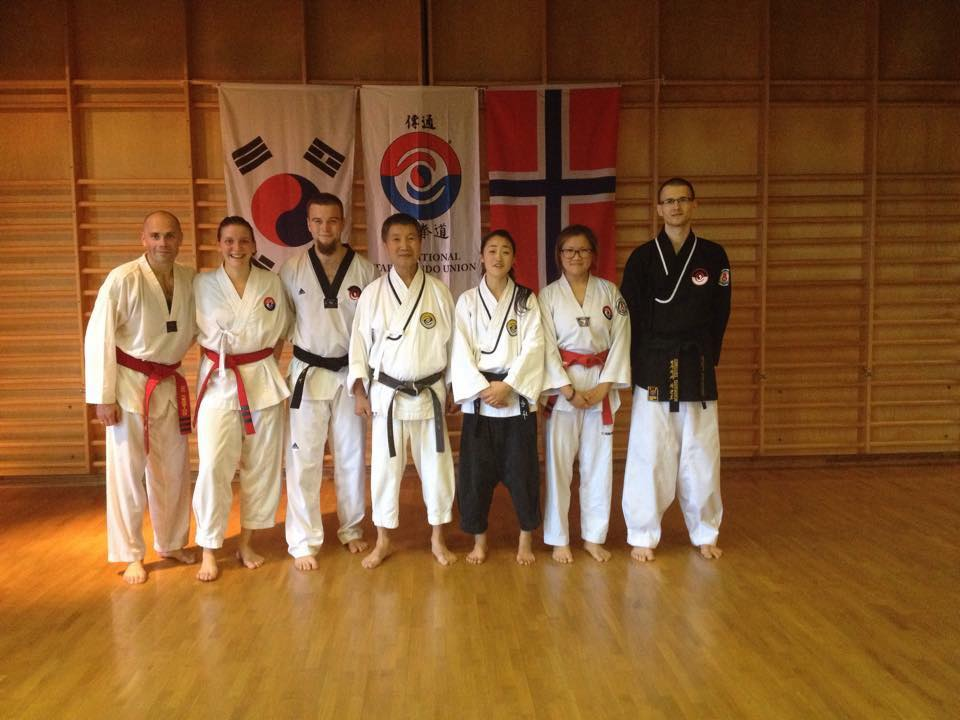
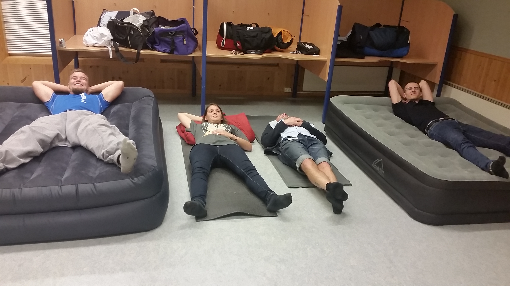

Innlegg
God stemning på sensommertrening

På treningssamlingen i Osterøy i helgen reiste fem representanter fra Ringerike. De bestod av Jennifer, Andrine, Arsiom, Tor-Brede og Anders.
Samlingen var en såkalt "Sensommertrening" lokalisert på Traditional Taekwondo Unions (TTU) hovedsete og Norsk-koreansk kultursenter på Osterøy utenfor Bergen. Dette er TTUs hoveddojang og nåværende hjemsted til vår Grandmaster Cho Won Sup (9. dan). Treningshelgen var åpen for alle, og var det er første gang det er arrangert en slik treningssamling der, på denne tiden av året.
Vi kjørte bil inn, på tidvis komisk smale veier og var fremme fredag kveld rundt klokka 21. Dette gjorde at vi desverre gikk glipp av første trening, men vi rakk kveldsmaten. Dagen etter var det fire treninger, holdt av GM Cho, Master Anna Kim (6.dan) og Master Erling Oppedal (7. dan). Artsiom fikk bare deltatt på tre av disse, da han plutselig ble rekruttert til å holde en av barnetreningene, og imponerte visst mange der.
Det som også var spesielt med denne helgen, var at det ble holdt en minneseremoni Grandmaster Chong Woo Lee, som gikk bort 8. august. GM Lee var vår GM Chos master og en pioner innen Taekwondo. Han var leder for Ji Do Kwan (en av de største originale Taekwondo-skolene i Korea) og nestleder i Kukiwon, og har vært med å forme Taekwondo hele sitt liv. Grandmaster Chong Woo Lee ble tildelt 10. dan etter sin død, en æresdan for spesielt viktige mennesker som har vært med i Taekwondos utvikling.
Videre ble det servert deilig koreansk mat, bulgogi, til middag før vi tok kvelden. Dagen etter var det to treninger, den siste med betydlig action og tempo.
Det er mange muligheter for å reise ut og trene med andre klubber gjennom året, og det er enda morsommere hvis vi reiser mange. Spør en instruktør hvis du vil være med å delta på samlinger seinere.
Under kan du tydelig se hvem som er rutinert i å reise på samling, og hvem ikke!
{kind=link}
